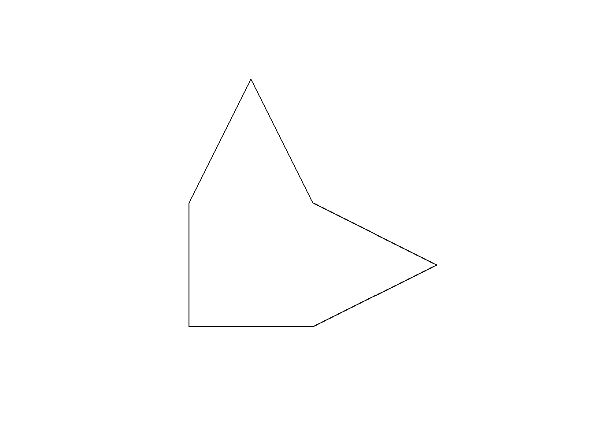
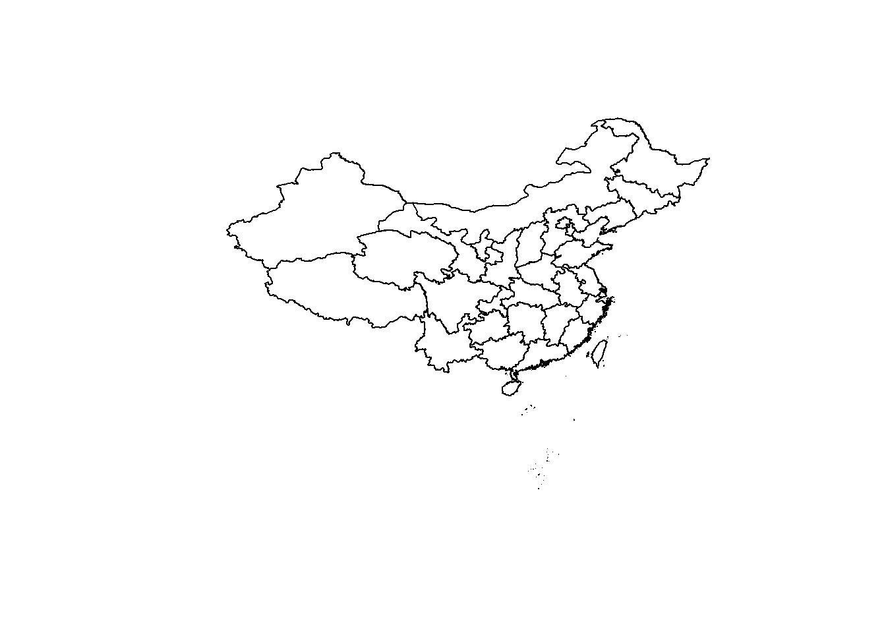
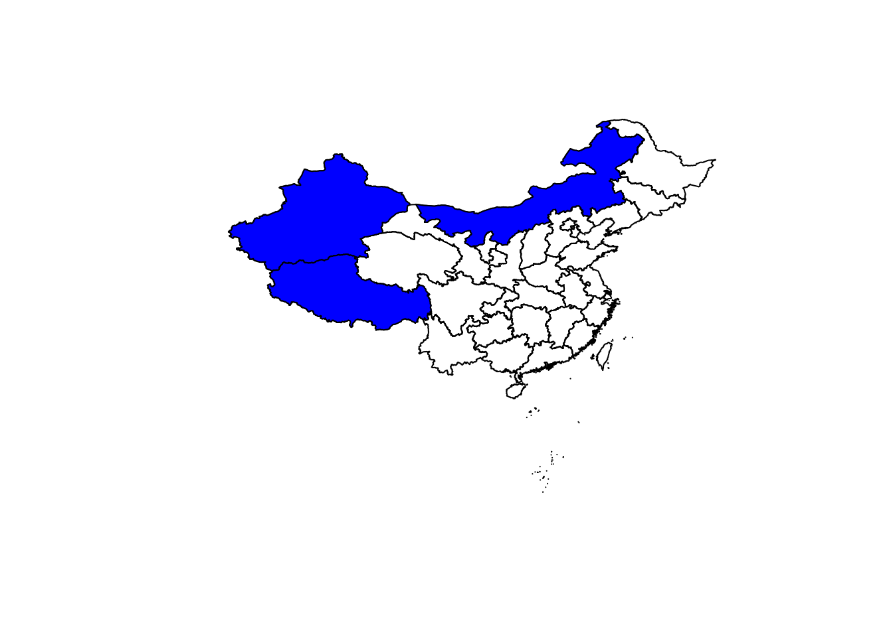
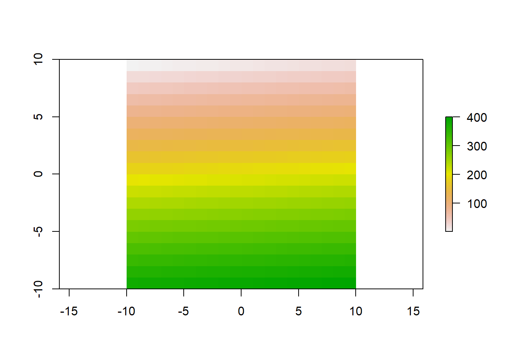
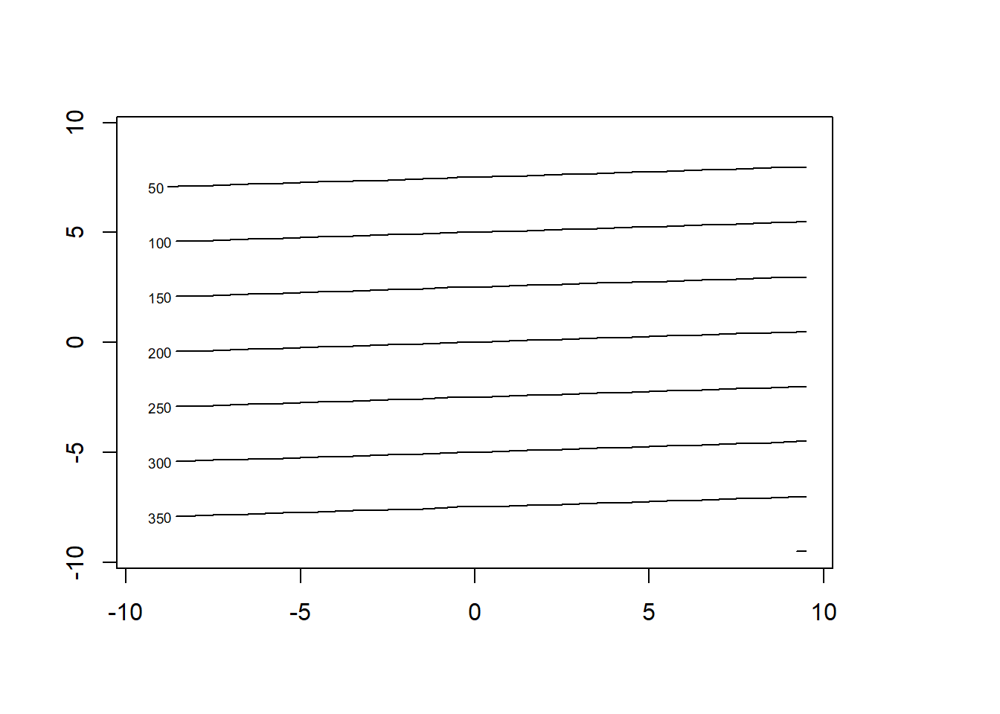
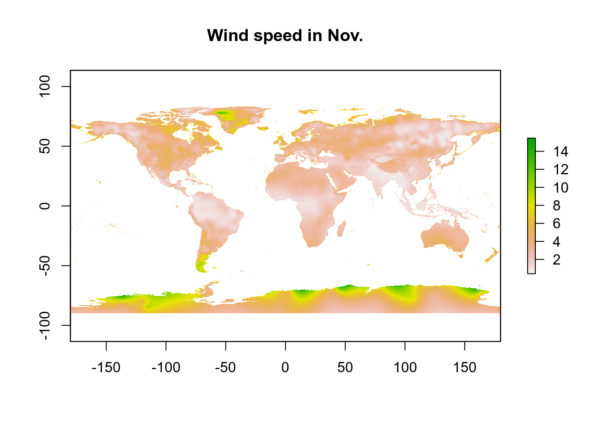
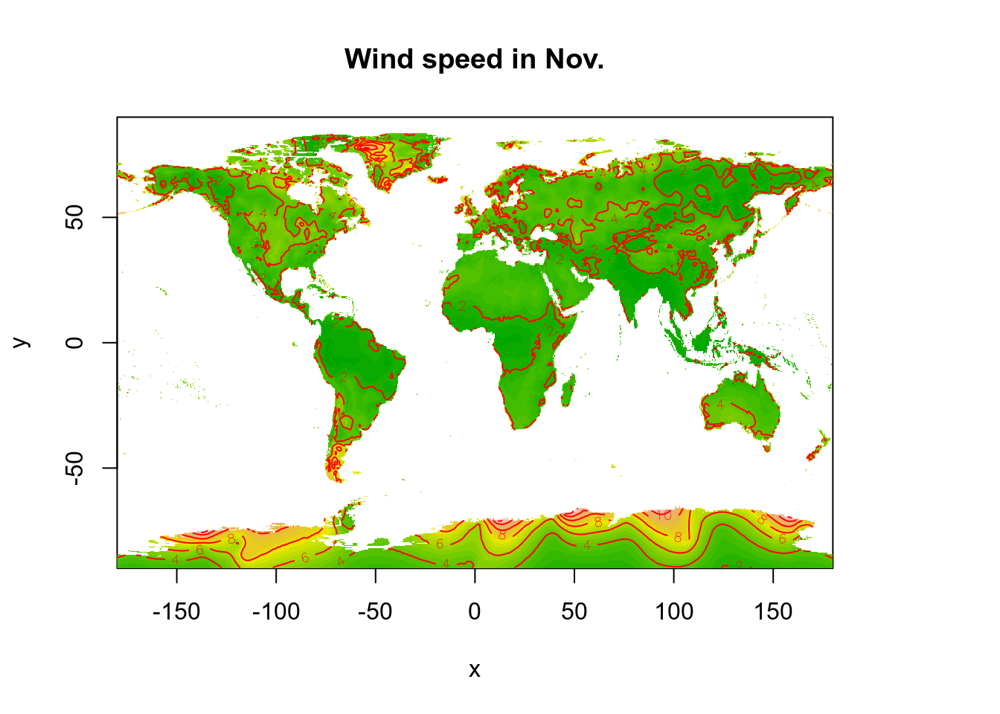
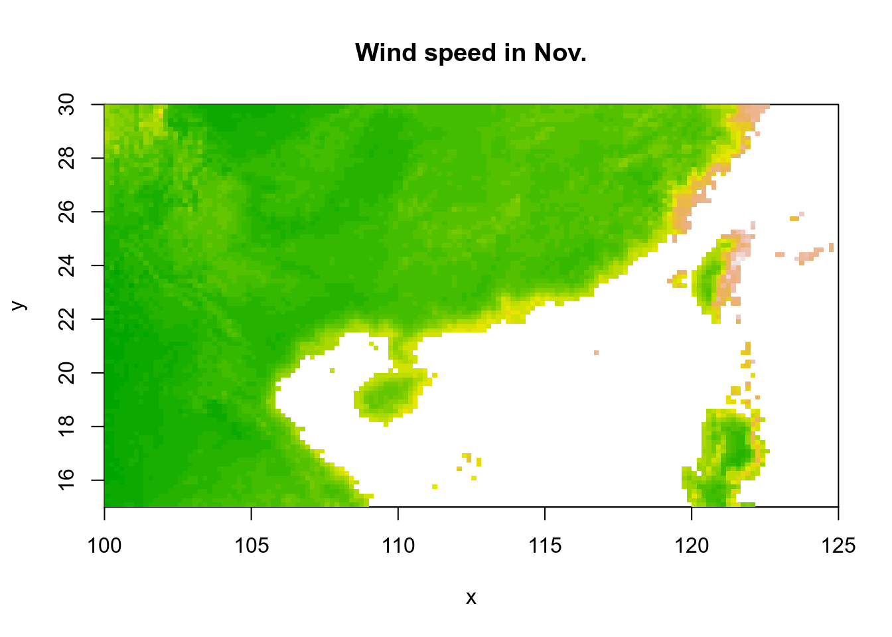

Section 10 Spatial Data Types in R
“Maps are like campfires – everyone gathers around them, because they allow people to understand complex issues at a glance, and find agreement about how to help the land.” - Sonoma Ecology Center
Prerequisites
Install the following packages for this section:
Load the libraries:
## Warning: package 'sp' was built under R version 4.0.3## Warning: package 'rgdal' was built under R version 4.0.3## rgdal: version: 1.5-18, (SVN revision 1082)
## Geospatial Data Abstraction Library extensions to R successfully loaded
## Loaded GDAL runtime: GDAL 3.0.4, released 2020/01/28
## Path to GDAL shared files: C:/Users/86133/Documents/R/win-library/4.0/rgdal/gdal
## GDAL binary built with GEOS: TRUE
## Loaded PROJ runtime: Rel. 6.3.1, February 10th, 2020, [PJ_VERSION: 631]
## Path to PROJ shared files: C:/Users/86133/Documents/R/win-library/4.0/rgdal/proj
## Linking to sp version:1.4-4
## To mute warnings of possible GDAL/OSR exportToProj4() degradation,
## use options("rgdal_show_exportToProj4_warnings"="none") before loading rgdal.## Warning: package 'sf' was built under R version 4.0.3## Linking to GEOS 3.8.0, GDAL 3.0.4, PROJ 6.3.1## Warning: package 'raster' was built under R version 4.0.3##
## Attaching package: 'raster'## The following objects are masked from 'package:MASS':
##
## area, select## The following object is masked from 'package:dplyr':
##
## select## The following object is masked from 'package:tidyr':
##
## extractThe notes below are modified from the excellent Introduction to Spatial Data Types in R freely available on the GitHub.
Spatial objects
In vector GIS, there are four key objects to deal with:
point
line
polygon
grid
The first package to provide classes and methods for spatial data types in R is sp, which provides classes and methods to create points, lines, polygons, and grids and to operate on them. About 350 of the spatial analysis packages use the spatial data types that are implemented in sp, i.e., they “depend” on the sp package, and many more are indirectly dependent.
The foundational structure for any spatial object in sp is the Spatial class. It has two “slots”:
a bounding box
a CRS class object to define the Coordinate Reference System
This basic structure is then extended, depending on the characteristics of the spatial object (point, line, polygon).
To build up a spatial object in sp we could follow these steps.
Create geometric objects
Points (which may have 2 or 3 dimensions) are the most basic spatial data objects. They are generated out of either a single coordinate or a set of coordinates, like a two-column matrix or a dataframe with a column for latitude and one for longitude.
Lines are generated out of Line objects. A Line object is a collection of 2D coordinates and is generated out of a two-column matrix or a dataframe with a column for latitude and one for longitude. A Lines object is a list of one or more Line objects, for example, all the contours at a single elevation.
Polygons are generated out of Polygon objects. A Polygon object is a collection of 2D coordinates with equal first and last coordinates and is generated out of a two-column matrix or a dataframe with a column for latitude and one for longitude. A Polygons object is a list of one or more Polygon objects, for example, islands belonging to the same country.
See here for a very simple example of how to create Line and Polygon object:
# Set up some basic points
x <- c(1, 2, 3, 2, 1.5, 1)
y <- c(1, 1, 1.5, 2, 3, 2)
# Create a Line object
MyLine <- Line(cbind(x,y))
str(MyLine)## Formal class 'Line' [package "sp"] with 1 slot
## ..@ coords: num [1:6, 1:2] 1 2 3 2 1.5 1 1 1 1.5 2 ...
## .. ..- attr(*, "dimnames")=List of 2
## .. .. ..$ : NULL
## .. .. ..$ : chr [1:2] "x" "y"# Create a Lines object
MyLines <- Lines(list(MyLine), ID = "River1") # this contains just one Line!
str(MyLines)## Formal class 'Lines' [package "sp"] with 2 slots
## ..@ Lines:List of 1
## .. ..$ :Formal class 'Line' [package "sp"] with 1 slot
## .. .. .. ..@ coords: num [1:6, 1:2] 1 2 3 2 1.5 1 1 1 1.5 2 ...
## .. .. .. .. ..- attr(*, "dimnames")=List of 2
## .. .. .. .. .. ..$ : NULL
## .. .. .. .. .. ..$ : chr [1:2] "x" "y"
## ..@ ID : chr "River1"## Formal class 'Polygon' [package "sp"] with 5 slots
## ..@ labpt : num [1:2] 1.71 1.71
## ..@ area : num 2
## ..@ hole : logi TRUE
## ..@ ringDir: int -1
## ..@ coords : num [1:7, 1:2] 1 2 3 2 1.5 1 1 1 1 1.5 ...# Create a Polygons object
MyPolygons <- Polygons(list(MyPolygon), ID = "Region1") # this contains just one Line!
str(MyPolygons)## Formal class 'Polygons' [package "sp"] with 5 slots
## ..@ Polygons :List of 1
## .. ..$ :Formal class 'Polygon' [package "sp"] with 5 slots
## .. .. .. ..@ labpt : num [1:2] 1.71 1.71
## .. .. .. ..@ area : num 2
## .. .. .. ..@ hole : logi FALSE
## .. .. .. ..@ ringDir: int 1
## .. .. .. ..@ coords : num [1:7, 1:2] 1 1 1.5 2 3 2 1 1 2 3 ...
## ..@ plotOrder: int 1
## ..@ labpt : num [1:2] 1.71 1.71
## ..@ ID : chr "Region1"
## ..@ area : num 2Create spatial objects
We get geometric objects from the previous setp, the next setp is to add the bounding box (automatically) and the slot for the Coordinate Reference System or CRS (which needs to be filled with a value manually). SpatialPoints can be directly generated out of the coordinates. SpatialLines and SpatialPolygons objects are generated using lists of Lines or Polygons objects respectively.
See here for how to create a SpatialLines and SpatialPolygons object:
## Formal class 'SpatialLines' [package "sp"] with 3 slots
## ..@ lines :List of 1
## .. ..$ :Formal class 'Lines' [package "sp"] with 2 slots
## .. .. .. ..@ Lines:List of 1
## .. .. .. .. ..$ :Formal class 'Line' [package "sp"] with 1 slot
## .. .. .. .. .. .. ..@ coords: num [1:6, 1:2] 1 2 3 2 1.5 1 1 1 1.5 2 ...
## .. .. .. .. .. .. .. ..- attr(*, "dimnames")=List of 2
## .. .. .. .. .. .. .. .. ..$ : NULL
## .. .. .. .. .. .. .. .. ..$ : chr [1:2] "x" "y"
## .. .. .. ..@ ID : chr "River1"
## ..@ bbox : num [1:2, 1:2] 1 1 3 3
## .. ..- attr(*, "dimnames")=List of 2
## .. .. ..$ : chr [1:2] "x" "y"
## .. .. ..$ : chr [1:2] "min" "max"
## ..@ proj4string:Formal class 'CRS' [package "sp"] with 1 slot
## .. .. ..@ projargs: chr NA# Create a SpatialPolygons object
MyPolygons_sp <- SpatialPolygons(list(MyPolygons))
str(MyPolygons_sp)## Formal class 'SpatialPolygons' [package "sp"] with 4 slots
## ..@ polygons :List of 1
## .. ..$ :Formal class 'Polygons' [package "sp"] with 5 slots
## .. .. .. ..@ Polygons :List of 1
## .. .. .. .. ..$ :Formal class 'Polygon' [package "sp"] with 5 slots
## .. .. .. .. .. .. ..@ labpt : num [1:2] 1.71 1.71
## .. .. .. .. .. .. ..@ area : num 2
## .. .. .. .. .. .. ..@ hole : logi FALSE
## .. .. .. .. .. .. ..@ ringDir: int 1
## .. .. .. .. .. .. ..@ coords : num [1:7, 1:2] 1 1 1.5 2 3 2 1 1 2 3 ...
## .. .. .. ..@ plotOrder: int 1
## .. .. .. ..@ labpt : num [1:2] 1.71 1.71
## .. .. .. ..@ ID : chr "Region1"
## .. .. .. ..@ area : num 2
## ..@ plotOrder : int 1
## ..@ bbox : num [1:2, 1:2] 1 1 3 3
## .. ..- attr(*, "dimnames")=List of 2
## .. .. ..$ : chr [1:2] "x" "y"
## .. .. ..$ : chr [1:2] "min" "max"
## ..@ proj4string:Formal class 'CRS' [package "sp"] with 1 slot
## .. .. ..@ projargs: chr NAAdd attributes
Add a data frame with attribute data, which will turn your Spatial* (* stands for Points, Lines, or Polygons) object into a Spatial*DataFrame object. The points in a SpatialPoints object may be associated with a row of attributes to create a SpatialPointsDataFrame object. The coordinates and attributes may, but do not have to be keyed to each other using ID values.
SpatialLinesDataFrame and SpatialPolygonsDataFrame objects are defined using SpatialLines and SpatialPolygons objects and data frames. The ID fields are here required to match the data frame row names.
See here for how to create a SpatialLinesDataframe and a SpatialPolygonsDataframe:
# Data frame
# Note how we use the ID from above!
Attribute1 <- data.frame(id="River1", use="Flux", water_per_day = 10)
# Add the attributes
MyLines_sp_dfr <- SpatialLinesDataFrame(MyLines_sp, Attribute1, match.ID = "id")
str(MyLines_sp_dfr)## Formal class 'SpatialLinesDataFrame' [package "sp"] with 4 slots
## ..@ data :'data.frame': 1 obs. of 3 variables:
## .. ..$ id : chr "River1"
## .. ..$ use : chr "Flux"
## .. ..$ water_per_day: num 10
## ..@ lines :List of 1
## .. ..$ :Formal class 'Lines' [package "sp"] with 2 slots
## .. .. .. ..@ Lines:List of 1
## .. .. .. .. ..$ :Formal class 'Line' [package "sp"] with 1 slot
## .. .. .. .. .. .. ..@ coords: num [1:6, 1:2] 1 2 3 2 1.5 1 1 1 1.5 2 ...
## .. .. .. .. .. .. .. ..- attr(*, "dimnames")=List of 2
## .. .. .. .. .. .. .. .. ..$ : NULL
## .. .. .. .. .. .. .. .. ..$ : chr [1:2] "x" "y"
## .. .. .. ..@ ID : chr "River1"
## ..@ bbox : num [1:2, 1:2] 1 1 3 3
## .. ..- attr(*, "dimnames")=List of 2
## .. .. ..$ : chr [1:2] "x" "y"
## .. .. ..$ : chr [1:2] "min" "max"
## ..@ proj4string:Formal class 'CRS' [package "sp"] with 1 slot
## .. .. ..@ projargs: chr NA
# Data frame
# Note how we use the ID from above!
Attribute2 <- data.frame(id="Region1", use="Population", Population_count=10000)
# Add the attributes
MyPolygons_sp_dfr <- SpatialPolygonsDataFrame(MyPolygons_sp, Attribute2, match.ID = "id")
str(MyPolygons_sp_dfr)## Formal class 'SpatialPolygonsDataFrame' [package "sp"] with 5 slots
## ..@ data :'data.frame': 1 obs. of 3 variables:
## .. ..$ id : chr "Region1"
## .. ..$ use : chr "Population"
## .. ..$ Population_count: num 10000
## ..@ polygons :List of 1
## .. ..$ :Formal class 'Polygons' [package "sp"] with 5 slots
## .. .. .. ..@ Polygons :List of 1
## .. .. .. .. ..$ :Formal class 'Polygon' [package "sp"] with 5 slots
## .. .. .. .. .. .. ..@ labpt : num [1:2] 1.71 1.71
## .. .. .. .. .. .. ..@ area : num 2
## .. .. .. .. .. .. ..@ hole : logi FALSE
## .. .. .. .. .. .. ..@ ringDir: int 1
## .. .. .. .. .. .. ..@ coords : num [1:7, 1:2] 1 1 1.5 2 3 2 1 1 2 3 ...
## .. .. .. ..@ plotOrder: int 1
## .. .. .. ..@ labpt : num [1:2] 1.71 1.71
## .. .. .. ..@ ID : chr "Region1"
## .. .. .. ..@ area : num 2
## ..@ plotOrder : int 1
## ..@ bbox : num [1:2, 1:2] 1 1 3 3
## .. ..- attr(*, "dimnames")=List of 2
## .. .. ..$ : chr [1:2] "x" "y"
## .. .. ..$ : chr [1:2] "min" "max"
## ..@ proj4string:Formal class 'CRS' [package "sp"] with 1 slot
## .. .. ..@ projargs: chr NA
Shape file
In the above sub-section, we learn how to creat Spatial* objects, you can save the Spatial* objects using writeOGR() (for vector) from the rgdal package.
The parameters provided for each function vary depending on the exact spatial file type you are reading. We will take an ESRI shapefile as an example. A shapefile - as you know - consists of various files of the same name, but with different extensions. They should all be in one directory.
For example, we can save MyPolygons_sp_dfr to a Shape file (MyPolygons) with the following line of script:
# Save the SpatialPolygons object as a Shape file
writeOGR(MyPolygons_sp_dfr,dsn = "D://class/MyPolygons",
layer ="Population", driver="ESRI Shapefile")We can also read in spatial data using readOGR() (for vector) and readGDAL() (for raster/grids) functions from the rgdal package. When reading in a shape file, readOGR() requires the following two arguments:
Data source name (
dsn), this is the path to the folder that contains the files.Layer name (
layer), this is the shape file name WITHOUT extension.
Let’s use the shape file of China map as an example, download it. Decompress it. Open the folder, you will see there are three files of different formats (.dbf, .shp, .shx). In R, we can read in the shape via:
## OGR data source with driver: ESRI Shapefile
## Source: "D:\class\China_map", layer: "bou2_4p"
## with 925 features
## It has 7 fields
## Integer64 fields read as strings: BOU2_4M_ BOU2_4M_IDNext we can check the attributes of this shape file, and plot it:
## Object of class SpatialPolygonsDataFrame
## Coordinates:
## min max
## x 73.446960 135.08583
## y 6.318641 53.55793
## Is projected: NA
## proj4string : [NA]
## Data attributes:
## AREA PERIMETER BOU2_4M_ BOU2_4M_ID ADCODE93
## Min. : 0.00 Min. : 0.006 Length:925 Length:925 Min. : 0
## 1st Qu.: 0.00 1st Qu.: 0.024 Class :character Class :character 1st Qu.:330000
## Median : 0.00 Median : 0.043 Mode :character Mode :character Median :350000
## Mean : 1.04 Mean : 1.503 Mean :405762
## 3rd Qu.: 0.00 3rd Qu.: 0.087 3rd Qu.:440000
## Max. :175.59 Max. :129.933 Max. :810000
## ADCODE99 NAME
## Min. : 0 Length:925
## 1st Qu.:330000 Class :character
## Median :350000 Mode :character
## Mean :405751
## 3rd Qu.:440000
## Max. :810000## [1] "SpatialPolygonsDataFrame"
## attr(,"package")
## [1] "sp"## [1] "AREA" "PERIMETER" "BOU2_4M_" "BOU2_4M_ID" "ADCODE93" "ADCODE99" "NAME"## AREA PERIMETER BOU2_4M_ BOU2_4M_ID ADCODE93 ADCODE99 NAME
## 0 54.447 68.489 2 23 230000 230000 黑龙江省
## 1 129.113 129.933 3 15 150000 150000 内蒙古自治区
## 2 175.591 84.905 4 65 650000 650000 新疆维吾尔自治区
## 3 21.315 41.186 5 22 220000 220000 吉林省
## 4 15.603 38.379 6 21 210000 210000 辽宁省
## 5 41.508 76.781 7 62 620000 620000 甘肃省
In R you can handel the shape file object directly. For example, we can filter provinces with area larger than 1 million km2 by uisng the subset() function:

Raster data
Raster files have a much more compact data structure than vectors. Because of their regular structure, the coordinates do not need to be recorded for each pixel or cell in the rectangular extent. A raster is defined by:
CRS
coordinates of its origin
a distance or cell size in each direction
a dimension or numbers of cells in each direction
an array of cell values
Given this structure, coordinates for any cell can be computed and don’t need to be stored.
The raster package is a major extension of spatial data classes to access large rasters and in particular, to process very large files. It includes RasterLayer and functions for converting among different classes and operators for computations on the raster data.
Let’s create a raster object MyRaster of type RasterLayer:
# Create an empty raster
MyRaster <- raster(xmn=-10, ymn=-10, xmx=10, ymx=10, resolution=c(1,1))
class(MyRaster)## [1] "RasterLayer"
## attr(,"package")
## [1] "raster"## class : RasterLayer
## dimensions : 20, 20, 400 (nrow, ncol, ncell)
## resolution : 1, 1 (x, y)
## extent : -10, 10, -10, 10 (xmin, xmax, ymin, ymax)
## crs : +proj=longlat +datum=WGS84 +no_defsAs you can see, if the crs argument is missing when creating the Raster object, the x coordinates are within -360 and 360, and the y coordinates are within -90 and 90, the WGS84 projection is used by default.
Now the RasterLayer is empty, we can add some values to the cells as follows:
# Set values to the cells
MyRaster <- setValues(MyRaster, seq(1,400,by=1))
# Quick Plot
plot(MyRaster)

Notice R fills the cells from the top-left to the bottom-right.
We can also use raster() to read in raster files. Download this tiff file (wc2.1_10m_wind_11.tif, ~ 2.4MB), which is the mean wind speed (m s-1) in Nov. from 1970-2000 provided by the WorldClim. The data is at a resolution of 10 minutes (~ 340 km2). In R, we can load it as:
# Read tiff file
Wind_Nov <- raster("D://class/wc2.1_10m_wind_11.tif")
# Look at the raster attributes
Wind_Nov## class : RasterLayer
## dimensions : 1080, 2160, 2332800 (nrow, ncol, ncell)
## resolution : 0.1666667, 0.1666667 (x, y)
## extent : -180, 180, -90, 90 (xmin, xmax, ymin, ymax)
## crs : +proj=longlat +datum=WGS84 +no_defs
## source : D:/class/wc2.1_10m_wind_11.tif
## names : wc2.1_10m_wind_11
## values : 0.40025, 15.78051 (min, max)We can plot it using plot() or image() function:

# image()
# Set color
col <- terrain.colors(30)
image(Wind_Nov, main="Wind speed in Nov.", col=col)
# Add contour lines
contour(Wind_Nov, add=T, col="red")
You can also use crop() function to select an area of interest:
# Define the crop extent
Crop_box <- c(100,125,15,30)
# Crop the raster
Wind_Nov_crop <- crop(Wind_Nov, Crop_box)
# Plot cropped DEM
plot(Wind_Nov_crop, main="Wind speed in Nov.")
In-class exercises
Exercise #1
Add one more river (River2) with a flux of 20 (water_per_day) to the MyLines_sp_dfr object. Plot your result.
Exercise #2
Add one more area (Region2) with a population of 500 (Population_count) to the MyPolygons_sp_dfr object. Save MyPolygons_sp_dfr to a new shape file named MyPolygons_new.
Exercise #3
Count how many provinces have areas of between 0.1 million and 0.2 million km2 according to the China_map object. Plot those provinces in red.
Exercise #4
Plot wind speed in Nov. near your hometown (a 10 degree by 10 degree domain) using the Wind_Nov object.
Further reading
Roger S. Bivand, Edzer J. Pebesma, Virgilio Gómez-Rubio, Applied Spatial Data Analysis with R.